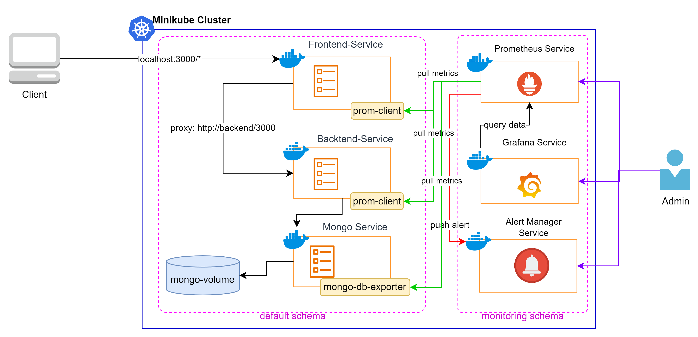

Ứng dụng TODO (frontend/backend/mongo, kèm mongo-exporter) chạy trên Minikube. Prometheus scrape metrics từ các pod, Grafana đọc dữ liệu từ Prometheus để vẽ dashboard, AlertManager đánh giá các rule và gửi cảnh báo về Slack.
https://github.com/hoanglinhdigital/react-express-mongodb (xem hướng dẫn ở Lab 1 của repository đó).sourcecode/section_15_monitoring_for_eks/lab1_metrics_alert/.Kiểm tra và cập nhật Minikube nếu cần:
minikube update-check
minikube stop
minikube delete
choco upgrade minikube
minikube startDeploy ứng dụng TODO lên Minikube (chú ý dùng file có kèm mongo-exporter):
kubectl apply -f todo-app-minikube-local-with-mongo-exporter.yamlKiểm tra pod và service đã chạy:
kubectl get pods
kubectl get serviceskubectl apply -f todo-app-monitoring-stack.yamlKiểm tra kết quả deploy trong namespace monitoring:
kubectl get pods -n monitoring
kubectl get services -n monitoring
kubectl get deployments -n monitoringMở Grafana (đăng nhập admin/admin):
minikube service grafana -n monitoringMở Prometheus UI:
minikube service prometheus -n monitoringMở AlertManager UI:
minikube service alertmanager -n monitoringTại Prometheus UI, chạy thử một số query (xem thêm prometheus_query.md trong thư mục source):
up{kubernetes_pod_name=~"backend.*"}
up{kubernetes_pod_name=~"frontend.*"}
rate(container_cpu_usage_seconds_total{pod=~"backend.*"}[5m])
topk(5, container_memory_usage_bytes{namespace="default"})Vào Connections → Data sources xác nhận Prometheus đã được cấu hình (URL http://prometheus:9090, bấm Save & test để kiểm tra).
Sau đó tạo các panel minh hoạ (xem chi tiết trong grafana-dashboard.md):
# Panel "Pod Status - Default Namespace"
up{kubernetes_namespace="default"}
# Panel "Backend Pods Running"
count(up{kubernetes_pod_name=~"backend-deployment.*"} == 1)
# Panel "Memory Usage Over Time"
container_memory_usage_bytes{pod=~"backend-deployment.*", container="backend"}
# Panel "CPU Usage (5m rate)"
rate(container_cpu_usage_seconds_total{pod=~"backend-deployment.*", container="backend"}[5m])Bạn cũng có thể import dashboard có sẵn của cộng đồng (ví dụ ID 7249, 6417) qua Dashboards → New → Import.
Áp dụng ConfigMap chứa 5 alert rules (BackendPodDown, FrontendPodDown, MongoPodDown, HighCPUUsage, HighMemoryUsage):
kubectl apply -f alert-rules.yamlMở file todo-app-monitoring-stack.yaml, bỏ comment ở dòng 113 và 130 để Prometheus mount file alert_rules.yml, rồi apply lại:
kubectl apply -f todo-app-monitoring-stack.yamlVào Prometheus UI → tab Alerts, bạn sẽ thấy 5 alert ở trạng thái Inactive (xanh lá).
Tạo Slack Incoming Webhook (Slack → Settings & administration → Manage apps → Incoming WebHooks), copy Webhook URL.
Cập nhật Webhook URL và channel trong file alert-manager-configmap-for-slack.yaml, rồi thay block AlertManager ConfigMap trong todo-app-monitoring-stack.yaml bằng nội dung file đó:
kubectl apply -f todo-app-monitoring-stack.yaml
kubectl rollout restart deployment alertmanager -n monitoringScale backend về 0 để kích hoạt alert BackendPodDown:
kubectl scale deployment backend-deployment --replicas=0 -n defaultĐợi khoảng 1 phút, quan sát alert chuyển sang Firing trong Prometheus → AlertManager → Slack (nếu đã cấu hình). Sau đó scale lại:
kubectl scale deployment backend-deployment --replicas=2 -n defaultmonitoring.up{...} trả giá trị 1).Firing khi scale backend về 0.localhost thay vì tên service).http://prometheus:9090 (tên service trong cùng namespace) và bấm Save & test.alert_rules.yml trong todo-app-monitoring-stack.yaml, hoặc chưa apply lại.kubectl apply -f todo-app-monitoring-stack.yaml rồi đợi pod Prometheus khởi động lại.kubectl rollout restart deployment alertmanager -n monitoring; xem log pod alertmanager.kubectl delete -f todo-app-monitoring-stack.yaml
kubectl delete -f todo-app-minikube-local-with-mongo-exporter.yaml